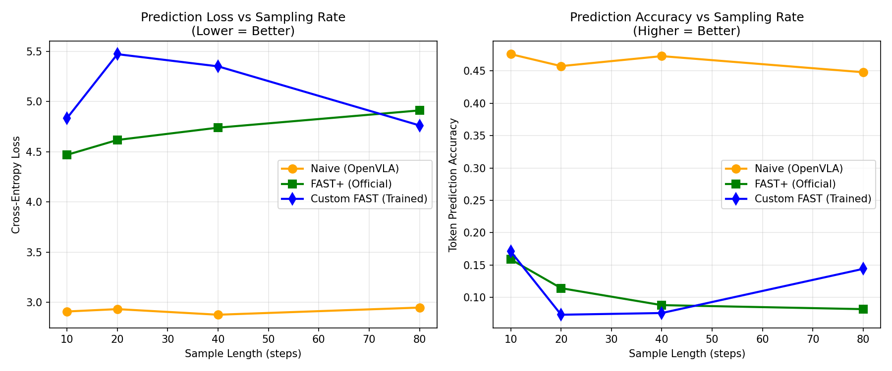

A small experiment with Physical Intelligence’s FAST action tokenizer on real cable-routing data. The universal FAST+ tokenizer keeps a median 81% of a custom-fit tokenizer’s compression, right at my 80% threshold, and the answer turns on how the custom tokenizer is tuned.
The FAST+ universal tokenizer achieves at least 80% of the compression ratio of a custom FAST tokenizer on cable manipulation data.
FAST compresses action chunks with a discrete cosine transform followed by byte-pair encoding, and FAST+ is the universal tokenizer trained across many robot datasets. The paper's pitch is that FAST+ works out of the box. Cable routing is a good stress test because it is contact-rich, low-rate and unlike most of the tabletop data FAST+ was fit on. The question matters for the Intrinsic AI for Industry challenge, where the task is cable assembly.
lerobot/berkeley_cable_routing, 1,647 real episodes of a 7-DoF Franka arm routing a cable through clips at 10 Hz..fit() on the same code path. Nothing is reimplemented locally.draccus==0.8.0 and LeRobot pins 0.10.0. One environment loads the data, the other tokenizes.| Chunk | Naive tokens | FAST+ compression | Custom FAST, median | Custom FAST, best | FAST+ ÷ custom, median |
|---|---|---|---|---|---|
| 1 s (10 steps × 7 dims) | 70 | 2.60× | 3.38× | 4.65× | 0.77 |
| 2 s (20 steps × 7 dims) | 140 | 2.78× | 3.32× | 4.72× | 0.84 |
Across all 72 configurations the FAST+ compression ratio stays in a narrow band, 2.58 to 2.79×, while the custom tokenizer ranges from 2.18 to 4.72×. The ratio of the two, which is what the hypothesis is about, runs from 0.56 to 1.19 with a median of 0.81. So the hypothesis holds at the median, by one point, and does not hold robustly. The deciding variable is the custom tokenizer's DCT scale. At a loose scale of 10 the custom tokenizer is worse than FAST+ on every vocabulary, so the ratio exceeds 1. At a tight scale of 8 with a 4,096 vocabulary it beats FAST+ by nearly 2×. Longer chunks help both tokenizers a little.
Both tokenizers compress far less than the 3 to 10× the paper reports on its datasets. My reading is that 10 Hz cable-routing actions carry less temporal redundancy than the 50 Hz data FAST was designed for, so there is less for the DCT to remove.

The second metric reproduces the paper's motivation rather than its headline. Naive tokens are almost trivially predictable from their predecessors, with cross-entropy near 2.9 and accuracy near 0.46 regardless of chunk length, because consecutive per-dimension bins are nearly identical at any reasonable control rate. FAST tokens are much harder to predict, with loss between 4.5 and 5.5 and accuracy below 0.17. That is the point of the DCT: it removes the redundancy that would otherwise let a policy minimize its loss without learning anything about the task.
Method. Scripts, sweep table and figure are mine, from January 2026. All tokenization uses the official processor from Hugging Face.